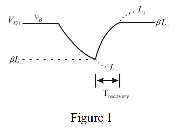

Refer to Figure 17.26 (a) in the text book for the monostable op-amp circuit.
A negative pulse is generated at the output during the quasi stable state.
Determine the duration of the output pulse.
Substitute for , 0.7 V for  and for .
and for .
Refer to Figure 17.26 (a) in the text book for the monostable op-amp circuit.
A negative pulse is generated at the output during the quasi stable state.
Determine the duration of the output pulse.
Substitute for , 0.7 V for and for .
Draw the signal waveform for the circuit.

The duration  of the output pulse is determined from the exponential waveform of .
of the output pulse is determined from the exponential waveform of .
At (recovery time), .
Substitute for  , for
, for  and 0.7 V for .
and 0.7 V for .
Thus, the recovery time is .